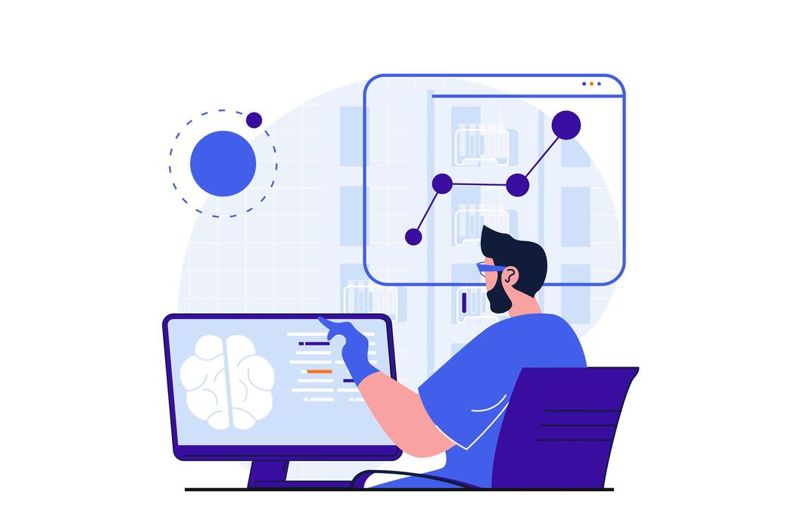
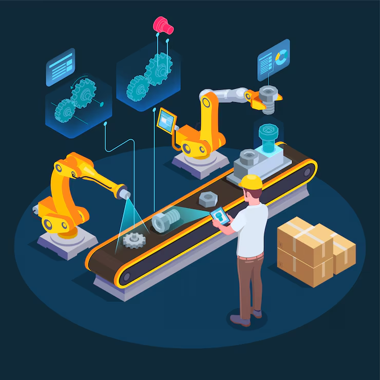
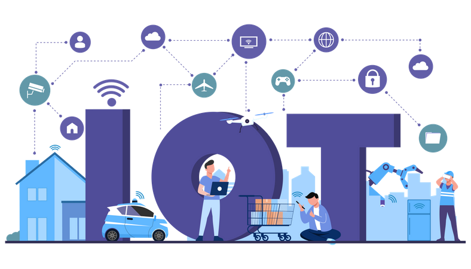
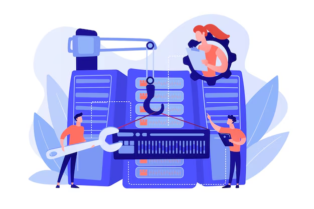
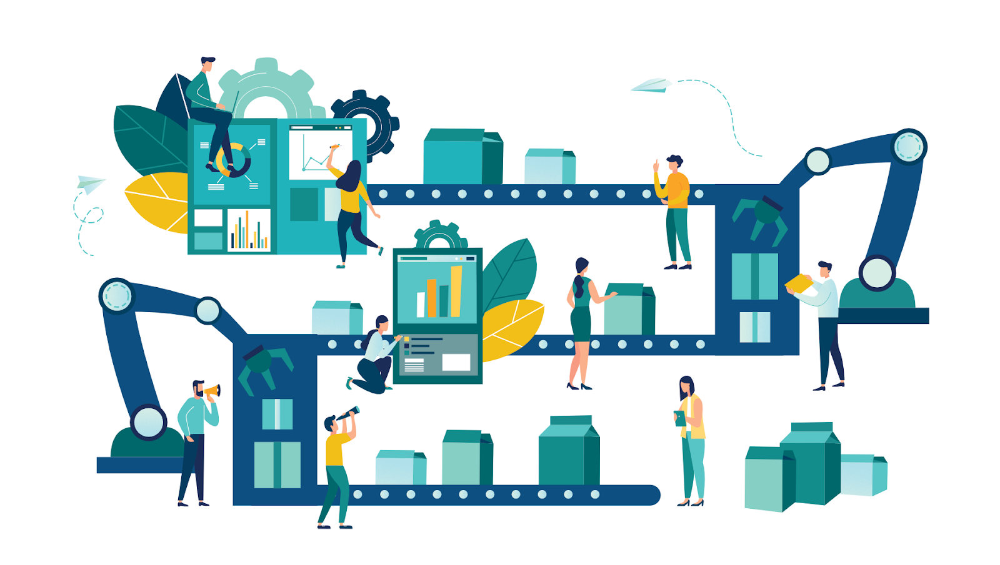
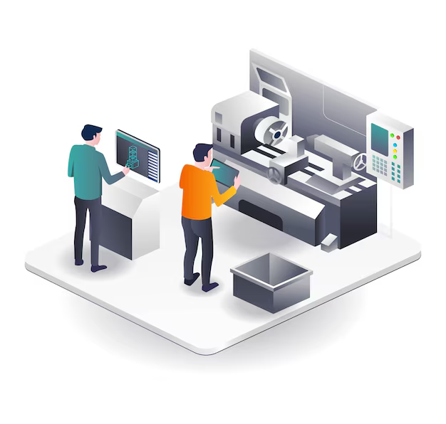

Todas as Trilhas
Tecnologias emergentes, carreiras do futuro e especializações em alta no mercado.

Web Design
Criação de interfaces modernas, responsivas e orientadas à experiência do usuário.

Curador de IA
Especialização em validação, refinamento e controle de conteúdo gerado por IA.

Gerente de Inovação
Condução estratégica de iniciativas para transformação e competitividade.
Cibersegurança
Proteção digital, mitigação de ataques e defesa de infraestrutura crítica.
Ciência de Dados
Análise avançada, modelagem preditiva e insights para tomada de decisão.
Machine Learning
Construção de modelos inteligentes para automação e sistemas preditivos.
Cloud Computing
Infraestrutura moderna, escalável e orientada a serviços distribuídos.
UX/UI Design
Experiência do usuário, fluxos, prototipação e interfaces centradas no humano.
Engenharia de Robôs
Desenvolvimento e programação de sistemas robóticos aplicados à automação e operações complexas.
Manufatura Avançada
Tecnologias digitais aplicadas à produção, como IoT, digital twins e integração cyber-física.
IoT Industrial
Monitoramento inteligente, sensores conectados e comunicação entre máquinas para otimizar operações.
Engenharia de Dados
Arquitetura, pipelines e infraestrutura para processamento de grandes volumes de dados.
Machine Learning Engineer
Deploy de modelos, MLOps, pipelines e sistemas inteligentes de decisão automatizada.
Segurança em Sistemas Industriais
Proteção de infraestruturas críticas, SCADA, OT e redes industriais contra ataques.
Máquinas CNC
Programação, operação e otimização de equipamentos CNC aplicados à produção moderna.